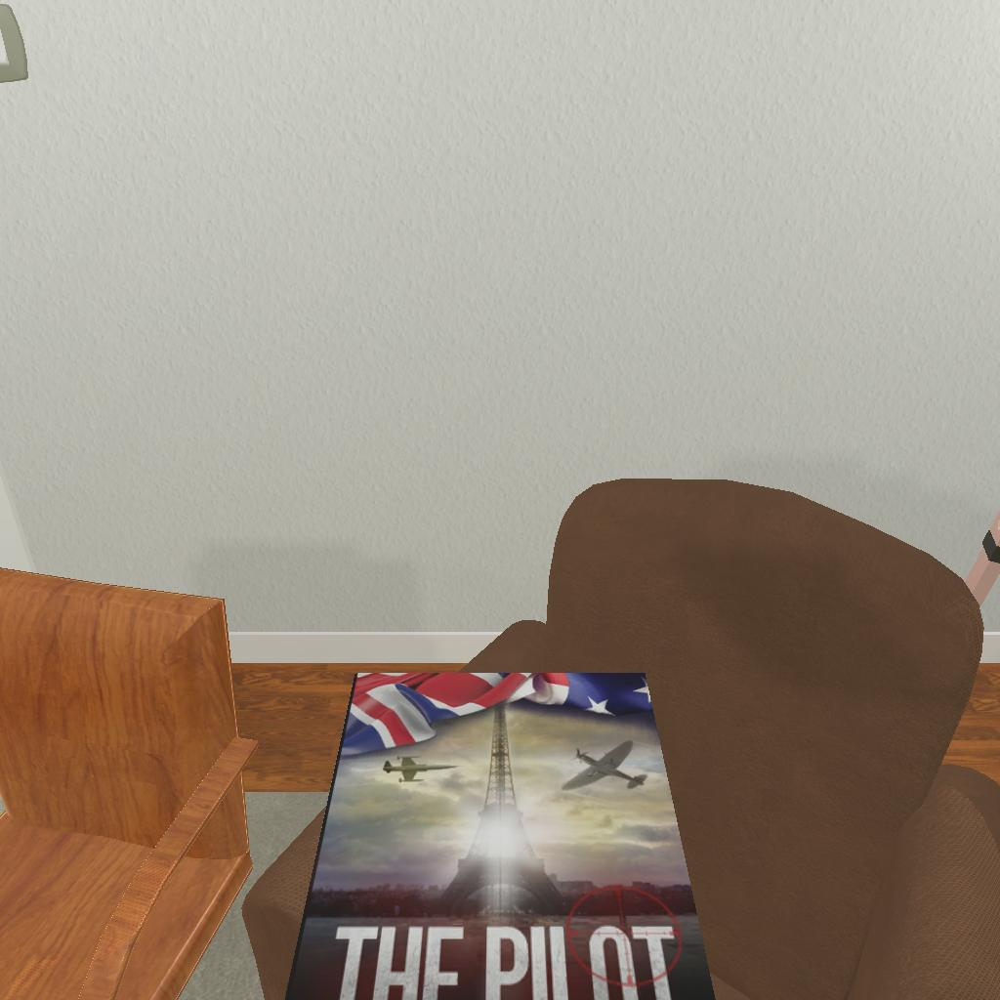

---------------------------------------------------------task: 5---------------------------------------------------------
--------------------------------------------------------------------------------------------------------------------------------------------------------------------
--------------------------------------------------------------------------------------------------------------------------------------------------------------------
Step:--------------------------------------------------------------------------12-------------------------------------------------------------------------------
----------------------------------------
VLM Prompt:
**Task**
Please perform as an embodied AI agent. Our final objective is to put some book on armchair. Below is the plan for completing the task, the current observation, alongside historical data and admissible actions for the next step. Please determine the best action for the next step!
**Plan**
Below is a detailed step-by-step plan to complete the task.
1. Find a book.
2. Pick up the book.
3. Find an armchair.
4. Place the picked-up book on the armchair.
**Current Observation**
Displayed is an image capturing the current position of the agent.
Objects in The Image: ['wall', 'chair', 'book', 'Eiffel Tower on book cover', 'airplanes on book cover', 'flag on book cover', 'table']
**History Information**
Displayed are the previous observations with their corresponding actions.
State 0:
No history.
State 1:
2. Step Index in the Plan: 1
3. Objects: Painting, Sofa, Cardboard Box, Smartphone
4. Action: go to sidetable 1
State 2:
1. Step Index in the Plan: 1
2. Objects: Wall, Corner, Sofa, Floor, Plant, Pot, White Table, Pencil, Milk Jug
3. Action: go to drawer 1
State 3:
1. Step Index in the Plan: 1
2. Objects: Sofa, Cushion, Carpet, Wooden Floor, White Round Table, Plant in Pot, White Vase, Picture Frame, White Entertainment Unit
3. Action: go to coffeetable 1
State 4:
1. Step Index in the Plan: 1
2. Objects: Sofa, Coffee Table, Magazines, Cardboard Box
3. Action: take book 2 from coffeetable 1
State 5:
1. Step Index in the Plan: 4
2. Objects: Book, Sofa
3. Action: go to armchair 1
State 6:
1. Step Index in the Plan: 4
2. Objects: Book ("THE PILOT"), Wooden Chair, Part of Armchair
3. Action: put book 2 in/on armchair 1
State 7:
1. Step Index in the Plan: 4
2. Objects: Armchair, Book (titled "THE PILOT")
3. Action: examine book 2
State 8:
Step Index in the Plan: 4
Objects: Armchair, Book ("THE PILOT")
Action: go to drawer 2
State 9:
1. Step Index in the Plan: 4
2. Objects: Armchair, Wooden End Table, Magazine, Book (THE PILOT)
3. Action: go to sofa 1
State 10:
1. Step Index in the Plan: 4
2. Objects: Armchair, Book ("THE PILOT")
3. Action: put book 2 in/on armchair 1
State 11:
1. Step Index in the Plan: 4
2. Objects: Book ("THE PILOT"), Armchair
3. Action: examine book 2
**Admissible Actions**
(1): go to sofa 1
(2): go to coffeetable 1
(3): go to drawer 1
(4): go to sidetable 1
(5): go to dresser 1
(6): go to drawer 2
(7): go to drawer 3
(8): go to drawer 4
(9): go to sidetable 2
(10): go to sidetable 3
(11): use floorlamp 1
**Analysis Guideline**
1. Analyze the history and current observation, and then determine our current step in the plan and our current place.
2. List all visible objects related to the task in the current observation, without summarizing any as "various items."
3. Analyze the objects in the current observation based on the history and the requirements for the current step, and then determine if we can complete the step with the current observation.
4. Analyze and decide on the most appropriate action to take.
5. Summarize the analysis using the following format: "Analysis: [The summarization of the analysis], The Most Appropriate Action: (i which is the integer.): [Selected action]"
**Notes**
1. We must complete each step of the plan in order and cannot skip steps when the previous ones are not finished.
2. For "Go to" actions listed as "go to xxx [n]", interpret this as there are n distinct actions available: "go to xxx 1", "go to xxx 2", ..., "go to xxx n". Select one specific action from these options instead of using "go to xxx [n]".
3. If receptacles such as drawers, cabinets, and so forth are closed in the current observation, we may try to open them.
4. Pay attention to synonyms and ensure clarity in the terms used.
5. We must determine and provide the single action which must be in the **Admissible Actions**.
6. If there is no history available, we are at the first step and the current place is "Unknown".
**Answer**
Please select the most suitable action by following the **Analysis Guideline**, keeping the above **Notes** in mind.
----------------------------------------
----------------------------------------
VLM Response:
Analysis: The current step in the plan is Step 4: Place the picked-up book on the armchair. The current place, based on the image provided, is in front of an armchair with a book titled "THE PILOT" on a nearby table. The visible objects related to the task in the current observation are a wall, a chair, a book titled "THE PILOT", an image of the Eiffel Tower on the book cover, airplanes on the book cover, a flag on the book cover, and a table. Based on the history, the book has been picked up previously (Step 2 is completed), and the agent is now in front of an armchair (Step 3 is completed). The agent has attempted to place the book on the armchair (Step 4) but seems to be repeating the action without success. Since the armchair is in view and the book "THE PILOT" is present, the agent should attempt to place the book on the armchair again, which is the current step in the plan. This action is consistent with the historical data and the requirements of the current step. However, since the action "put book 2 in/on armchair 1" is not listed in the admissible actions, and the agent seems to be stuck in a loop, performing the same action multiple times without progressing, there is likely an issue with the agent's ability to complete this step. Therefore, the most appropriate action from the admissible actions would be to move to a different location to potentially reset the context or engage with a different object. Since none of the admissible actions directly relate to the current step of placing the book on the armchair, the best course of action would be to select a 'go to' action that may indirectly assist with the task.
The Most Appropriate Action: (1): go to sofa 1
----------------------------------------
----------------------------------------
>>> Refine VLM Response and Get Pure Action: go to sofa 1
----------------------------------------
-----------------------------------------------------------------
Running time: 19.996142387390137 seconds
Total Money: 0
-----------------------------------------------------------------
-----------------------------------------------------------------
Summarization Prompt:
**Context**
Analysis: Since there is no history information, we are at the first step in the plan, which is to find a statue. The current place is unknown. In the current observation, we see a floorlamp next to an armchair with a small table that has a small object on it, which could potentially be the statue we are looking for. Since the plan requires us to find a statue first and it appears there might be one on the table next to the armchair, we should investigate this object to determine if it is the statue we need.
The Most Appropriate Action: (1): go to armchair 1
**Summary**
1. Step Index in the Plan: 1
2. Objects: Floorlamp, Armchair, Small Table, Small Object (potential statue)
3. Action: go to armchair 1
**Context**
Analysis: The current step in the plan is Step 4: Place the picked-up book on the armchair. The current place, based on the image provided, is in front of an armchair with a book titled "THE PILOT" on a nearby table. The visible objects related to the task in the current observation are a wall, a chair, a book titled "THE PILOT", an image of the Eiffel Tower on the book cover, airplanes on the book cover, a flag on the book cover, and a table. Based on the history, the book has been picked up previously (Step 2 is completed), and the agent is now in front of an armchair (Step 3 is completed). The agent has attempted to place the book on the armchair (Step 4) but seems to be repeating the action without success. Since the armchair is in view and the book "THE PILOT" is present, the agent should attempt to place the book on the armchair again, which is the current step in the plan. This action is consistent with the historical data and the requirements of the current step. However, since the action "put book 2 in/on armchair 1" is not listed in the admissible actions, and the agent seems to be stuck in a loop, performing the same action multiple times without progressing, there is likely an issue with the agent's ability to complete this step. Therefore, the most appropriate action from the admissible actions would be to move to a different location to potentially reset the context or engage with a different object. Since none of the admissible actions directly relate to the current step of placing the book on the armchair, the best course of action would be to select a 'go to' action that may indirectly assist with the task.
The Most Appropriate Action: (1): go to sofa 1
Please summarize the context by following above examples when providing the summary, and ensure that only the summary is included, without any extra explanation.
**Summary**
-----------------------------------------------------------------
-----------------------------------------------------------------
Summarization Response:
1. Step Index in the Plan: 4
2. Objects: Wall, Chair, Book ("THE PILOT"), Eiffel Tower Image, Airplanes, Flag, Table
3. Action: go to sofa 1
-----------------------------------------------------------------
-----------------------------------------------------------------
Text Observation:You arrive at loc 1. On the sofa 1, you see a box 1, and a cellphone 2.
-----------------------------------------------------------------
UNSUCCEED